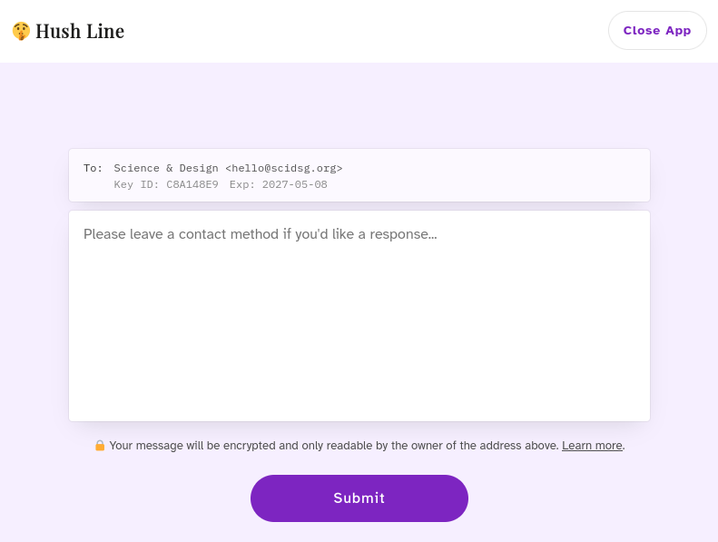

Hush Line Field Manual
Hush Line is a lightweight, secure, and anonymous tip line. It's easy to install and to use.
Think of a box in your office or school in which people can slip in anonymous messages, with a lock on it that only you have the key to open.
It's intended for journalists and newsrooms to offer a public tip line, by educators and school administrators to provide students with a safe way to report potentially sensitive information, or employers for anonymous employee reporting.
This guide will show you to set up your own Hush Line.
The source files for this guide are available on GitHub. See that repo for licensing information.
What does Hush Line do?
Hush Line provides a safe way to receive private messages from your community when confidentiality is a must.

Hush Line is a website with a form.
When a member of your community writes a message into the form and clicks the submit button, Hush Line encrypts their message in such a way that only you can read it, then emails it to you.
I still don't get it, conceptually
Have you ever used Google Forms? You create a form, say a text box, and send the URL to people to fill out. When a person fills in your form and hits submit, their response gets automatically put into a Google Spreadsheet.
This is convenient for things like, surveying food choices or picking a date that works for most people. But what if you're asking people to share more sensitive information? To make them feel as safe as possible, we would want a system such that only you can read the responses. Not other users, not your company's IT department, not even Google. Furthermore, we really don't even want to know anything about the submitter that they don't choose to reveal.
This is what Hush Line provides.
Hush Line Raspberry Pi Prerequisites
In this section we'll get everything ready before installing Hush Line.
General Prerequisites
Contents
Software
1. Tor Browser
Your Hush Line has the option to only be reachable via the Tor Browser. It's not only the most private but also the easiest to set up and deploy.
2. Gmail
We'll use Gmail for its high reliability. If you don't already have an account, create one. It's also not a bad idea to have an email address separate from your personal account.
3. Mailvelope
To decrypt Hush Line messages, we'll use Mailvelope, which integrates with Gmail, adding PGP functionality; add the extension to Firefox or Chrome.
Open the extension in your browser and click "Let's Start."
Creating Keys
What is PGP? Let's use a non-technical metaphor
Here's how I like to think of PGP: Once set up, you'll have a very special envelope that people can put their messages inside of. What makes these envelopes so special is that it can only be opened by one specific letter opener.
Now let's say we want to receive secret messages from your friend Bob. First, you give Bob plenty of your special envelopes. (We do not give Bob the letter opener, since you don't want Bob to be able to open mail intended for you.) Bob writes his message, places it in one of your envelopes, and sends it to you. When you receive the sealed envelope, you use your letter opener to open it, confidence that no one else was able to read its contents along the way.
4. Create your keys
To create our envelopes and letter opener, we're going to use our Mailvelope extension.
Click on "Generate Keys." Give your key a name, enter your Gmail address, and create a strong password.
5. Verify your email address
Before using your key, you'll have to verify your email address. Look for a message from Mailvelope Key Server in your Gmail inbox.
The message is encrypted, and when opened, you'll be prompted for your Mailvelope password to read the email. After entering your password, click the link.
6. Copy your PGP key
After confirming that your email was verified, click on the supplied URL.
Your PGP Key is in the grey box, beginning with -----BEGIN PGP PUBLIC KEY BLOCK----- and ending with -----END PGP PUBLIC KEY BLOCK-----. Copy your entire key into a notepad for easy access.
App Password
7. Create an app password
Hush Line has a mail server installed to encrypted send messages to your email address. You'll need SMTP information, as well as a password. You should never use your main account password; instead, create app-specific passwords. These are essentially purpose-made for single applications.
From your Gmail account, click on your avatar to access your account-level options. Select Manage Google Account.
Next, click on the Security tab on the left, then scroll to the bottom of the page to find App Passwords.
Click on App Passwords, then enter a name, then click Create. A dialog will pop up with your app-specfic password. Copy it to a notepad for easy access.
🎉 Congratulations, you're now ready to install Hush Line!
Raspberry Pi Prerequisites
Hardware
- Hardware: Raspberry Pi 4/3B+
- Power: Raspberry Pi USB-C Power Supply
- Storage: Micro SD Card
- SD Card Adapter: SD Card Reader
Software Downloads
If you didn't know, your Raspberry Pi doesn't come with an operating system. Don't panic! We're going to install one now called Raspberry Pi OS.
In this section, we'll need the following:
- Raspberry Pi Imager (from prerequisites)
- Raspberry Pi
- microSD Card
- Power Supply
1. Raspberry Pi Imager
Like a Macbook runs MacOS, and a Dell runs Windows, a Raspberry Pi runs Linux, which comes in many different flavors depending on your needs. Since we're using a Raspberry Pi, we'll use Raspberry Pi OS (64-bit), an operating system made just for the Pi. The Imager installs the operating system onto your microSD cardc where we'll set up Hush Line. Download it from https://www.raspberrypi.com/software/.
Prep Your Card
2. Install Raspberry Pi OS
Open the Raspberry Pi Imager and click Choose OS > Raspberry Pi OS (other) > Raspberry Pi OS (64-Bit).
Insert your microSD card into your computer, and then click Choose Storage and select your card.
Before clicking Write, click on the Settings gear in the bottom right of the window. Configure the following settings:
- Hostname = hushline
- Enable SSH with password authentication
- User = Hush
- Set a strong password
- Wifi settings
Boot up and log in to Your Pi
3. Insert microSD Card
Take your SD card and insert it into your Raspberry Pi. You'll find the SD card slide on the bottom of the board, opposite the ethernet ports.
Plug the power supply into the device and let it boot up.
4. Log In
On a Mac, open Spotlight search by pressing CMD + Space. Enter "Terminal" and select the application with the same name.
Enter ssh hush@hushline.local, and when prompted, enter the password you created in the first step.
🎉 That's it, you're ready to get started with Raspberry Pi!
VPS Prerequisites
In this section you'll need the following things to get Hush Line ready to install:
- Debit or credit card
- Digital Ocean, or any other VPS provider
Digital Ocean
Digital Ocean is an infrastructure service provider that provides a cost-effective way to create your first virtual private server (VPS).
1. Create an Account
Go to digitalocean.com and create an account. You'll need to enter payment information before you can create a VPS.
2. Create a VPS
Digital Ocean calls their VPS option Droplets. To create a droplet click the green "Create" button at the top of the screen, the click "Droplets."
You can configure your server to your desired specifications, but for this guide, we'll choose the following options:
- Location: San Francisco
- Image: Debian 12
- Size: Basic
- CPU: Regular SSD @ $4/mo
Create a strong password, then click "Create Droplet."
After a minute or two your Droplet should be ready. The "Resources" tab should be visible, and just below you'll see the IP address for your Droplet.
3. Log In
On a Mac, open Spotlight search by pressing CMD + Space. Enter "Terminal" and select the application with the same name.
Enter ssh root@<IP Address>, and when prompted, enter the password you created in the second step.
🎉 Congratulations, you're now ready to install Hush Line on Digital Ocean!
Threat Modeling for Hush Line Deployment
Introduction
The deployment of an anonymous tip line, like Hush Line, requires an understanding of the environment in which it will be used. Different organizations and individuals face unique threats, and the purpose of this guide is to help you navigate these challenges. By understanding your threat landscape, you can choose the appropriate deployment method that balances accessibility and security for your needs.
Understanding the Threats
To select the right Hush Line deployment, consider the potential risks and consequences you or your tipsters might face:
❕ Low Threats
These scenarios typically involve situations where the primary risk is non-targeted threats or generic cyber threats. The fallout from a security breach is minimal.
We recommend using a VPS and deploying Hush Line as a public domain to a URL like this: tips.acme.com.
Example Use Cases
- 💼 Small to medium businesses
- 🏫 Schoolhouses
- 🎈 Conference organizers
❗️ Medium Threats
Here, the risks escalate. They include targeted threats but might not require advanced defense measures.
We recommend using a VPS and deploying Hush Line as a public domain to a URL like this: tips.acme.com. When sharing your Hush Line address, include the onion address for people that require higher levels of anonymity.
Example Use Cases
- 📈 Publicly traded businesses
- 🩺 Law or doctor's offices
- 🚨 Domestic abuse hotlines
‼️ High Threats
These are scenarios where targeted threats are likely, and consequences can be severe, like endangering someone's physical safety.
Depending on risks to your physical location, we recommend either using a VPS or local device like a Raspberry Pi and choosing an onion-only deployment. This will provide the greatest protection for your community and your tip line.
Example Use Cases
- 📰 Journalists
- 🆘 Government whistleblowers
- 🚔 Locations with internet censorship
Malicious Actors & Misinformation
Always be aware that anonymity can be a double-edged sword. While it provides protection for genuine whistleblowers, it can also shield malicious actors. Regularly vet and verify the tips you receive to guard against misinformation campaigns, especially in high-risk scenarios.
Deployment Options
Given Hush Line's range of deployment choices, weigh the pros and cons of each:
-
Onion-only: Best for high-threat environments, offering maximum anonymity. However, it might be less accessible for non-technical users.
-
Tor + Public Web: Offers a balance of accessibility and security. Useful for medium-threat scenarios.
-
Physical Device: This option, like deploying on a Raspberry Pi, gives you more control but could be at risk if the physical location is compromised. Ideal for high-risk scenarios where control over the infrastructure is crucial.
It's important for all deployment types to share your addresses with your community openly and clearly, and reinforce to your users to only use the addresses that you've shared.
Boosting Security
To further bolster security:
- Use dedicated devices to check emails from Hush Line.
- Employ secondary verification methods for significant tips.
- Enhance anonymity with tools like VPNs or secure browsing techniques.
Maintenance & Updates
While Hush Line offers automatic updates, it's vital to:
- Regularly review the system for potential threats.
- Stay informed about the latest security updates and patches.
- Engage in regular security training and awareness for all staff involved.
Conclusion
Deploying Hush Line is a step towards fostering open communication while safeguarding anonymity. By understanding the threats, choosing the right deployment option, and following security best practices, you can ensure a secure and effective platform for your community.
For organizations seeking in-depth threat analysis and tailored advice, please send an email to hushline@scidsg.org.
Installing Hush Line
Let's learn how to get your very own Hush Line up and running so you can receive private information from your community.
Tor-Only Install
A Tor-only install is a great option for someone requiring anonymity and a high level of security, a journalist or human rights activist, for example.
1. Run The Installer
After logging in to either your Raspberry Pi or VPS, enter the follow command to start the installation process:
curl -sSL https://install.hushline.app | bash
Choose "Tor-Only" at the first prompt for the installation type.
2. Add Email Information
Hush Line will send an email with the encrypted Hush Line message to the account you configure here. Since we're using Gmail, we'll need the following information:
- Gmail address
- SMTP Address: smtp.gmail.com
- App Password (from prerequisites)
- Port: 465
- Public PGP Key (from prerequisites)
Once the installation completes, you'll see a message that looks like this:
✅ Installation complete!
Hush Line is a product by Science & Design.
Learn more about us at https://scidsg.org.
Have feedback? Send us an email at hushline@scidsg.org.
• Hush Line is running
http://5450rww63n5yvp5xzojb41rcx63g3pwaig63ezwp×5x75igzh×4w6qyd…onion
🎉 Congratulations! You've successfully set up your own anonymous tip line!
Tor + Public Web Install
If you're someone using Hush Line for non-life-threatening scenarios - educators running a Hush Line for student reporting, or an employer for anonymous employee reporting - you might want to deploy to a public URL - one that will work in browsers like Chrome, Firefox, or Safari. We'll exclusively use a VPS.
1. Run The Installer
After logging in to either your Raspberry Pi or VPS, enter the follow command to start the installation process:
curl -sSL https://install.hushline.app | bash
Choose "Tor + Public Domain" at the first prompt for the installation type.
2. Add Information
Hush Line will send an email with the encrypted Hush Line message to the account you configure here. You'll also need to purchase a domain name for your Hush Line. We'll need the following information:
- Domain name
- Gmail address
- SMTP Address: smtp.gmail.com
- App Password (from prerequisites)
- Port: 465
- Public PGP Key (from prerequisites)
3. Configure DNS
Now we need to point your domain name to your new Droplet. When the installer gets to the final step, it will display the exact information that you need to enter in your domain's DNS settings.
Once the installation completes, you'll see a message that looks like this:
✅ Installation complete!
Hush Line is a product by Science & Design.
Learn more about us at https://scidsg.org.
Have feedback? Send us an email at hushline@scidsg.org.
● Hush Line is running
https://ourdemo.app
http://jnaoywuss3dbgrmroeoqtsjymzf46in7lzh3bx6nwv3bzvwmhdvqytad.onion
https://jnaoywuss3dbgrmroeoqtsjymzf46in7lzh3bx6nwv3bzvwmhdvqytad.onion.ourdemo.app
🎉 Congratulations! You've successfully set up your own public anonymous tip line!
Installing Hush Line
Let's learn how to get your very own Hush Line up and running so you can receive private information from your community.
Sending Messages
For someone in your community to send you a Hush Line message, they just need to go to one of your addresses.
1. Tor
If you chose a Tor-only deployment you should have seen an output like this after installation completed:
✅ Installation complete!
Hush Line is a product by Science & Design.
Learn more about us at https://scidsg.org.
Have feedback? Send us an email at hushline@scidsg.org.
• Hush Line is running
http://5450rww63n5yvp5xzojb41rcx63g3pwaig63ezwp×5x75igzh×4w6qyd…onion
Open up Tor Browser and paste your onion address in the addess bar. Tor is a little slower than regular internet, so it'll take a few seconds before your site loads.
2. Public Websites
If you deployed Hush Line to a public website, you shouldh have seen an output like this:
✅ Installation complete!
Hush Line is a product by Science & Design.
Learn more about us at https://scidsg.org.
Have feedback? Send us an email at hushline@scidsg.org.
● Hush Line is running
https://ourdemo.app
http://jnaoywuss3dbgrmroeoqtsjymzf46in7lzh3bx6nwv3bzvwmhdvqytad.onion
https://jnaoywuss3dbgrmroeoqtsjymzf46in7lzh3bx6nwv3bzvwmhdvqytad.onion.ourdemo.app
In the example above, the first and the last address can load in regular browsers like Chrome, Firefox, or Safari. The onion-only address needs Tor Browser to load.
The first address should be easy to recognize, but the last might look different. It's called an onion-bound address, and it's a new way of making your onion address discoverable through HTTPS logs. During the installation we requested and configured automatically renewing Let's Encrypt certificates for your domain name. This provides a secure connection from the user's browser to your server. When a certifiate is issued, it's logged in publicly discoverable certificate logs. Now, if someone searches for your domain, they'll see all of the domain names issued a HTTPS certificate. One of them will include your onion address, making it's discovery more resistant to censorship! Learn more at sauteed-onions.org.
Reading Messages
When someone sends you a Hush Line message, it'll get delivered to the email account you configured during installation. Messages will have the subject line "🤫 New Hush Line Message Received."
Gmail + Mailvelope
When you click on your Hush Line message you might be prompted to enter your Mailvelope password. Recall that this is the password we set up in our prerequisites.
🎉 Congratulations! You're ready to go! If you have any questions, please send questions to hushline@scidsg.org.
Glossary
Hush Line site: The website that your Hush Line form is available at. If you're running Hush Line in "Tor-only" mode, your Hush Line site will have a URL like http://vfalkrrucjb7pztjskfumnqytpze5iimu4i2t2ygwv6ntylvylt2flad.onion and will be only accessible through the Tor Browser.
Hush Line form: The text box form that occupies your Hush Line site. Community members may choose to type and submit a message through this form (thus becoming a source).
community: The pool of people who know your Hush Line site's URL. If you only share your Hush Line site's URL with a team of employees, that's your community. If you promote your Hush Line address publicly, your community may be very large.
community member: A member of your community. A person who is a potential source.
source: The community member who has written and submitted a given message
message: The text that a source submits to your Hush Line form. Hush Line only accepts text messages (no multimedia or file attachments). All Hush Line messages are encrypted and thus private. Also note that Hush Line messages only go one-way: from source to user.
Hush Line user: The person who runs the Hush Line. We assume the user has access to the Hush Line email address and Hush Line PGP key.
Hush Line email address: The email address that receives your Hush Line messages from your sources
Hush Line PGP Public Key: The PGP public key that Hushline uses to encrypt all messages before sending emails to your Hush Line email address.
Hush Line PGP Private Key: The private PGP key the user uses to decrypt Hush Line messages. The PGP password is also needed to decrypt messages.
Hush Line PGP password: The password needed, in combination with the Hush Line PGP Private Key, to decrypt and read messages. (Keep this secret.)